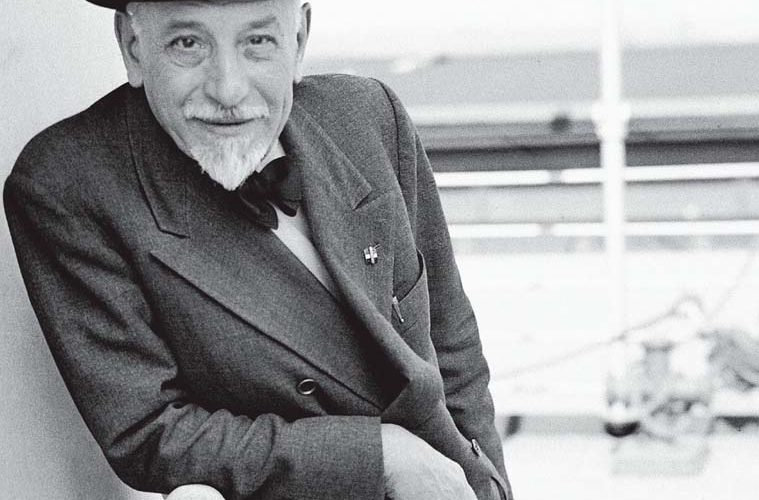
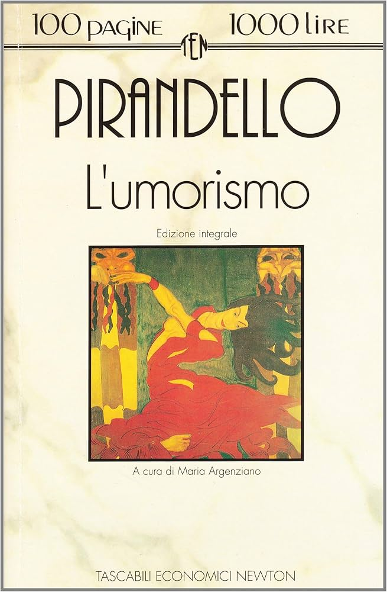
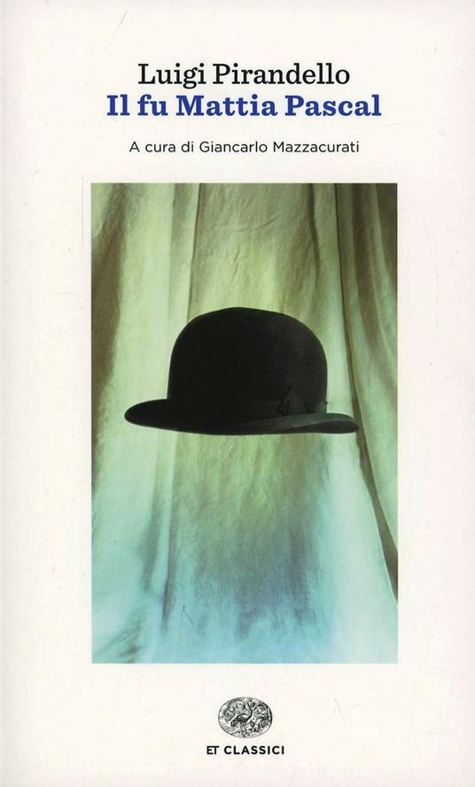
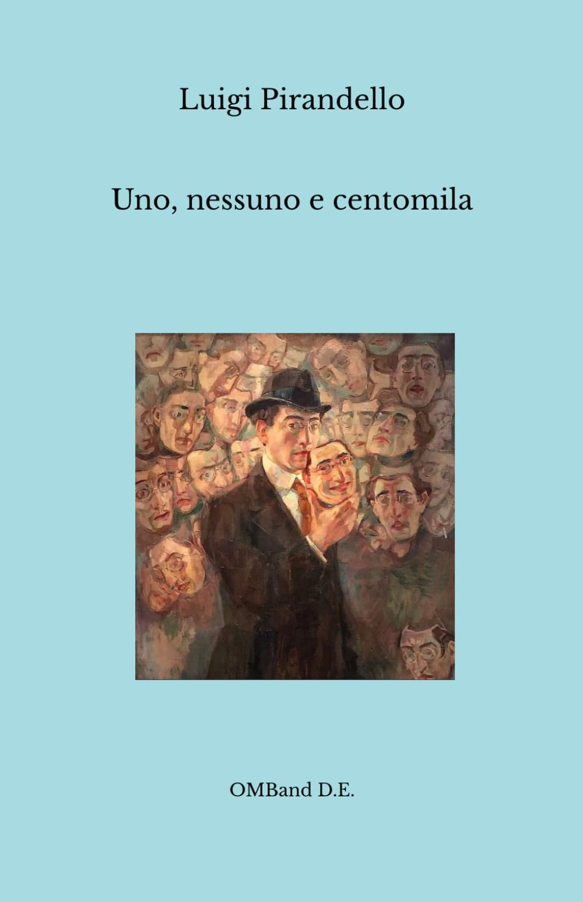
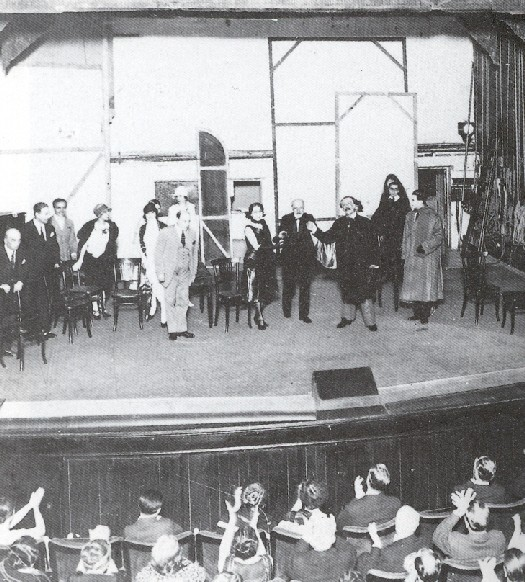

Argomento: Luigi Pirandello

Luigi Pirandello nacque ad Agrigento nel 1867 e morì a Roma nel 1936. Visse in un'epoca di profondi cambiamenti: la crisi dei valori ottocenteschi, le due guerre mondiali e l'affermarsi delle ideologie totalitarie segnarono profondamente la sua visione del mondo e la sua produzione letteraria.
La sua vita fu caratterizzata da eventi traumatici: la malattia mentale della moglie, che lo costrinse ad assistere al suo progressivo deterioramento psichico per oltre vent'anni, e le difficoltà economiche che lo spinsero a produrre con ritmi intensissimi. Nel 1934 ricevette il Premio Nobel per la Letteratura.
Il pensiero di Pirandello è fondato sul relativismo conoscitivo: non esiste una realtà oggettiva, ma tante realtà quanti sono i punti di vista di chi la osserva. Ogni persona vede il mondo attraverso la propria prospettiva, e nessuna prospettiva è più vera delle altre.
Da questo deriva una delle sue idee centrali: il contrasto tra vita e forma. La vita è un flusso continuo, caotico e in perenne mutamento. La forma è la maschera rigida che la società impone all'individuo: il nome, il ruolo sociale, la professione. L'individuo è intrappolato in una forma che non corrisponde alla sua vera essenza.

Nel saggio L'umorismo del 1908 Pirandello definisce la sua poetica. Distingue tra comicità e umorismo:
L'umorismo pirandelliano nasce quindi da questa doppia riflessione: prima si ride, poi si capisce e si soffre insieme al personaggio.

Pubblicato nel 1904, è uno dei romanzi più importanti di Pirandello. Mattia Pascal, oppresso da una vita infelice, approfitta di un caso fortuito per fingersi morto e ricominciare con una nuova identità: Adriano Meis.
Ma la libertà si rivela illusoria: senza un'identità riconosciuta dalla società, Adriano Meis non può fare nulla, non può sposarsi, non può denunciare un furto, non può esistere pienamente. Mattia è costretto a "uccidere" anche Adriano Meis e tornare alla sua vecchia vita, scoprendo però di non appartenere più nemmeno a quella. È il fu Mattia Pascal: appartiene al passato, non al presente.
Il romanzo illustra perfettamente il tema dell'identità frammentata: l'uomo moderno non sa chi è, intrappolato tra le maschere che la società gli impone.

Pubblicato nel 1926, è l'opera che porta alle estreme conseguenze il relativismo pirandelliano. Vitangelo Moscarda scopre che il modo in cui gli altri lo vedono è completamente diverso da come lui vede se stesso: sua moglie gli fa notare che il suo naso pende a destra.
Da questa piccola osservazione nasce una crisi esistenziale totale. Se ognuno degli altri ha una diversa immagine di lui, allora chi è davvero? È uno per sé, nessuno in realtà, centomila per gli altri. La soluzione radicale di Vitangelo è rinunciare a qualsiasi identità fissa, dissolvendosi nel flusso della vita pura.

Pirandello rivoluzionò il teatro del Novecento con le sue opere meteatrali, in cui la finzione e la realtà si mescolano fino a confondersi. L'opera più rappresentativa è Sei personaggi in cerca d'autore del 1921.
Durante una prova teatrale irrompono sei personaggi che reclamano di essere vivi e di avere una loro storia da raccontare. Il confine tra attori e personaggi, tra palcoscenico e vita reale, si dissolve. Pirandello mette in scena il problema stesso della rappresentazione: chi è più reale, il personaggio o l'attore che lo interpreta?
Ho scelto Pirandello perché è uno degli autori che mi ha colpito di più durante il percorso scolastico. La sua idea che la realtà non sia oggettiva ma dipenda dal punto di vista di chi la osserva mi ha fatto riflettere in modo nuovo su come le persone si relazionano tra loro.
Il tema dell'identità frammentata, dell'uomo che non sa chi è davvero dietro le maschere sociali, è un tema che sento molto vicino alla realtà di oggi, in un'epoca in cui ognuno costruisce versioni diverse di sé sui social network e nella vita quotidiana.